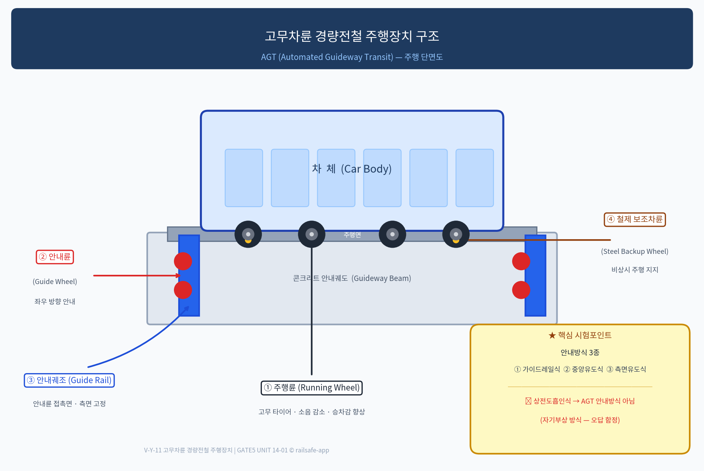

핵심 개념
CONCEPT 01
경량전철(LRT)이란 무엇인가
SOURCE 91-B
경량전철(Light Rail Transit, LRT)은 도시 교통수단으로서 중량전철(重量電鐵)보다 수송능력·차량중량·인프라 규모가 작은 전철 시스템이다. 도시 내 중단거리 노선에 적용되며, 건설비가 낮고 도심 환경에 적합하다.
| 구분 |
중량전철 (Heavy Rail) |
경량전철 (LRT) |
| 수송인원 |
시간당 30,000~60,000명 |
시간당 5,000~30,000명 |
| 주행방식 |
철제차륜·철제레일 |
고무차륜·LIM·모노레일·자기부상 등 |
| 차량중량 |
40~60t (1량) |
10~30t (1량) |
| 건설비 |
높음 |
낮음 (지하철 대비 50~70%) |
| 국내 적용 예 |
지하철 1~9호선, KTX |
의정부경전철(AGT), 부산김해경전철(AGT), 우이신설선(LIM) |
경량전철 방식 분류 — "어떻게 다른가"의 관점
| 방식 |
주행매체 |
추진 |
특징 한 줄 |
| AGT (고무차륜) |
고무차륜 + 안내궤조 |
전기모터 또는 LIM |
무인운전, 저소음, 안내궤조 필수 → 이 UNIT 핵심 |
| LIM 방식 |
철제차륜 |
선형유도전동기(LIM) |
급구배·급곡선 유리, 점착력 불필요 → unit-08-04 §7-2 참조 |
| 과좌식 모노레일 |
고무차륜 + 단궤 위 |
전기모터 |
궤도 위에서 주행, 안정성 높음 → unit-01-03 참조 |
| 현수식 모노레일 |
고무차륜 + 단궤 아래 |
전기모터 |
차체가 궤도에 매달림, 승강장 형태 특수 → unit-01-03 참조 |
| 자기부상(Maglev) |
비접촉 (부상) |
LIM + 전자기력 |
레일 비접촉, 마모 없음 → unit-01-03 참조 |
📎 참조 처리: LIM 원리·추진력 발생 메커니즘은 unit-08-04 §7-2에 상세 수록됨. 모노레일·자기부상 개요는 unit-01-03에 기수록. 이 UNIT에서 중복 서술 금지.
CONCEPT 02
고무차륜 AGT 주행장치 — 4개 구성요소
SOURCE 91-B · V-Y-11

[V-Y-11 고무차륜 경량전철 주행장치 구조도]
이미지 로드 실패 — 아래 텍스트 설명을 참조하십시오.
▲ V-Y-11 고무차륜 경량전철 주행장치 구조 | PRIMARY VIS
AGT 고무차륜 차량의 주행장치는 4가지 핵심 부품으로 구성된다. 이 구성을 정확히 암기하는 것이 시험의 핵심이다.
① Running Wheel
주행륜 (走行輪)
고무 타이어로 된 바퀴. 안내궤도(콘크리트 면) 위를 주행한다.
효과: 소음 감소, 승차감 향상, 경사 등판력 우수
② Guide Wheel
안내륜 (案內輪)
안내궤조(Guide Rail) 측면에 접촉하여 좌우 방향을 안내하는 소형 차륜.
차량이 안내궤도에서 이탈하지 않도록 제어한다.
③ Guide Rail
안내궤조 (案內軌條)
궤도 측면에 설치된 안내레일. 안내륜이 접촉하여 방향을 잡는다.
안내방식에 따라 중앙 또는 측면에 위치한다.
④ Steel Backup Wheel
철제 보조차륜 (鐵製 補助車輪)
고무차륜 내부 또는 인접에 위치하는 소형 철제 차륜.
고무 타이어 파손 시 비상 주행을 지지하여 탈선을 방지한다.
💡 암기 포인트: 주행륜(고무) → 안내륜(방향 안내) → 안내궤조(안내륜 접촉면) → 철제보조차륜(비상 지지). 이 4종 세트가 고무차륜 AGT의 주행장치 전체 구성이다.
⚠️ 혼동 주의: 주행륜은 "고무 타이어"이고, 철제보조차륜은 "비상용 철제 차륜"이다. 역할을 바꾸어 출제하는 함정이 있다.
CONCEPT 03
AGT 주행 안내방식 3종
SOURCE 91-B · DB Q1
고무차륜 AGT(Automated Guideway Transit)는 안내방식에 따라 3종으로 구분된다. "어떻게 좌우 방향을 잡는가"의 차이다.
① 가이드레일식
Guide Rail Type
궤도 측면에 설치된 가이드레일에 안내륜이 접촉하여 방향을 안내.
가장 일반적인 방식.
② 중앙유도식
Center Guidance Type
궤도 중앙에 안내궤조(중앙 레일)를 설치하여 안내.
차량 하부 중심에서 방향 제어.
③ 측면유도식
Side Guidance Type
궤도 측면 벽면에서 안내력을 받는 방식.
구조에 따라 달리 구현됨.
⚠️ 함정 선지: "상전도 흡인식"은 자기부상열차의 부상 방식이며, AGT의 안내방식이 아니다. 시험에서 오답 선지로 반드시 출제되는 패턴.
💡 암기법: AGT 안내방식 = 가·중·측 (가이드레일식 / 중앙유도식 / 측면유도식). "상전도"가 나오면 자기부상 방식 → 무조건 오답.
CONCEPT 04
AGT 시스템 특성 및 적용
SOURCE 91-B
| 항목 | 내용 |
|---|
| 정의 |
AGT(Automated Guideway Transit): 안내궤도를 따라 자동 운전하는 고무차륜 경량전철 시스템 |
| 주행방식 |
고무차륜 주행 + 안내궤조로 측면 안내 → 레일 없이 콘크리트 궤도 위 주행 |
| 운전방식 |
무인자동운전(Driverless) 적용 — ATO/ATC 자동화 |
| 추진방식 |
전기모터(회전식) 또는 LIM(선형유도전동기) |
| 장점 |
저소음·저진동 (고무차륜), 급곡선 통과 가능, 무인운전으로 운영비 절감 |
| 단점 |
안내궤도 전용 인프라 필요, 호환성 낮음 (기존 철도망 접속 불가) |
| 국내 적용 |
의정부경전철, 부산·김해경전철, 용인경전철, 인천공항 자동이동장치(APM) |
💡 LIM 추진 방식을 쓰는 AGT의 경우, 추진력은 LIM에서, 안내는 여전히 안내궤조가 담당한다. 추진·안내 역할 분리를 헷갈리지 말 것.
CONCEPT 05
모노레일 시험 함정 포인트 (unit-01-03 상세 내용 참조)
모노레일 상세 원리·특징은 unit-01-03에 기수록됨. 시험 출제 핵심 함정만 정리한다.
| 구분 |
과좌식 모노레일 (跨座式) |
현수식 모노레일 (懸垂式) |
| 주행 위치 |
궤도 위에 걸터 앉아 주행 (跨 = 걸터앉을 과) |
궤도 아래에 매달려 주행 (懸 = 매달 현) |
| 안정성 |
높음 (무게중심 낮음) |
진자 운동으로 상대적 낮음 |
| 국내 예 |
대전엑스포과학공원 |
일본 쇼난 모노레일 등 |
⚠️ 올바른 표기는 과좌식(跨座式): "걸터앉다(跨)"의 한자가 맞다. "건넌다(過)"가 아님. railway-king DB는 "과좌식"으로 수정 완료(v1.0).
⚠️ 모노레일이 건설이 간단하다는 선지 → 오답. 전용 구조물(고가교)이 필요하여 건설비가 높다.
SOURCE 기출 / 복원문항
Q1 · SOURCE 91-B · railway-king ch82 · ★★★ 최우선
고무차륜 AGT의 주행 안내방식이 아닌 것은?
① 가이드레일식
② 상전도 흡인식
③ 중앙 유도식
④ 측면 유도식
정답: ② | 해설: AGT 안내방식 3종 — 가이드레일식·중앙유도식·측면유도식. 상전도 흡인식은 자기부상열차의 부상 원리이며, AGT 안내방식이 아니다.
Q2 · railway-king ch82 · ★★ 모노레일 구분
다음 중 차량이 레일 아래에 매달려 주행하는 방식의 모노레일은?
① 과좌식 모노레일
② 현수식 모노레일
③ 자기부상열차
④ 고가철도
정답: ② | 해설: 현수식 모노레일(懸垂式)은 차량이 궤도 아래에 매달려 주행. 과좌식(跨座式)은 궤도 위에 걸터앉아 주행. "가좌식"은 오기 — 正字는 과좌식(跨座式)이다.
Q3 · railway-king ch82 · ★★ 모노레일 특징
모노레일의 특징으로 옳지 않은 것은?
① 소음이 적다
② 곡선 반경이 작게 설치 가능하다
③ 건설이 간단하여 비용이 저렴하다
④ 토지 점유율이 낮다
정답: ③ | 해설: 모노레일은 전용 고가 구조물이 필요하여 건설비가 높다. ①②④는 모노레일의 실제 장점이다.
참조 — SOURCE 88-A(LIM) 시험포인트 · 상세: unit-08-04 §7-2
LIM(선형유도전동기) — 핵심 오답 함정
오답 함정: "LIM은 급구배·급곡선 운행에 불리하다"
정답 방향: LIM은 점착력에 의존하지 않아 급구배·급곡선에 유리하다. "불리하다"는 틀린 선지. 상세 원리 → unit-08-04 §7-2 참조.